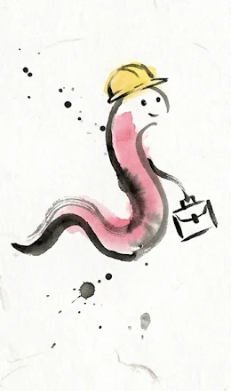
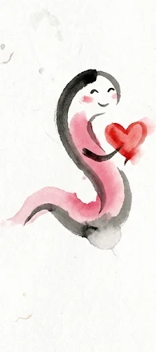
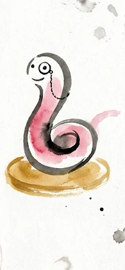
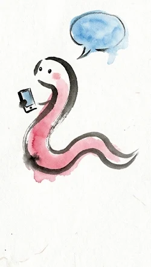

Agentes de IA open source para las partes tediosas de la vida. Corren en tu computadora y nada sale sin tu OK.
Pasá el mouse: es tinta.

Junta ofertas de los portales de empleo de Argentina, las ordena según tu perfil, adapta tu CV y sigue a los reclutadores por correo.
Ver en GitHub Disponible
Ordena tus matches por interés y escribe borradores con tu forma de hablar. No se envía nada hasta que lo aprobás.
Ver en GitHub En desarrollo
Investiga precios, noticias y balances de las empresas que seguís y explica su razonamiento. Es una herramienta de investigación, no un consejo financiero.
Ver en GitHub En desarrollo
Planifica tu contenido, adapta cada posteo a cada red y escribe borradores de respuesta a los comentarios, todo para que vos lo apruebes.
Ver en GitHubTus cuentas, chats y datos quedan en tu computadora. No hay ningún servidor de Worm Agents.
Los agentes redactan y sugieren. Lo que sale en tu nombre espera tu OK o un límite que pongas vos.
Todos los agentes están en GitHub. Leé el código, cambialo y usalo a tu manera.
Por ahora funcionan con Claude y están pensados para Argentina. Necesitás una PC con Windows y Claude Code con tu cuenta de Claude: usan tu propia suscripción, sin otra API key. LoveWorm también puede usar cualquier API compatible con OpenAI.